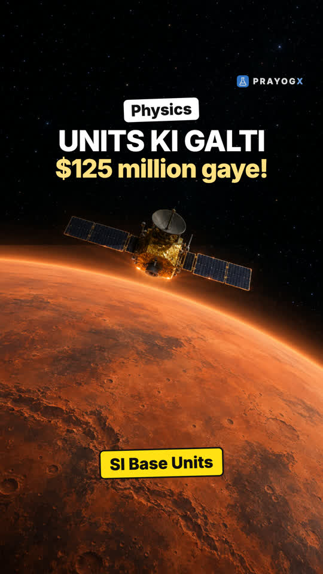

Units and Measurement: Chapter Introduction
Video not playing? YouTube
A number alone means nothing: every measurement is a number and a unit. The chapter builds the SI system, significant figures and dimensions, the base of all physics.
Download the short notesPDF, 175 KB · solved examples, practice set and answer key Download the workbook
PDF, 187 KB · fill in the blanks, true/false, assertion-reason, MCQ, numericals, short answer, match the columns; detailed solutions at the end Up next in this chapter

The SI System: Seven Base UnitsIn 1999 NASA lost the Mars Climate Orbiter because one team used pound-force and another newtons. Why the world uses one system, the SI, built on seven base units.PhysicsKey points
- Every measurement = number + unit; 5 m, 5 s and 5 kg are different things.
- The SI system has 7 base units: metre, kilogram, second, ampere, kelvin, mole, candela. Every other unit is derived from them.
- Significant figures show how precise a reading is.
- Dimensions let you check a formula without any experiment.
Why units matter
In 1999 NASA's Mars Climate Orbiter (about 125 million dollars) was lost at Mars. One team gave thruster data in pound-force seconds, the other read it as newton-seconds. Same number, different unit.
1 pound-force = 4.45 N
The 7 SI base units
| Quantity | Unit | Symbol |
|---|---|---|
| Length | metre | m |
| Mass | kilogram | kg |
| Time | second | s |
| Electric current | ampere | A |
| Temperature | kelvin | K |
| Amount of substance | mole | mol |
| Luminous intensity | candela | cd |
Every other unit is derived from these, for example 1 N = 1 kg m s⁻².
Significant figures and dimensions
2.5 cm has 2 significant figures, 2.54 cm has 3: the second reading is more precise.
Dimensions check formulas: v = u + at gives [LT⁻¹] on every term (correct), while v = u + at² would add [L] to [LT⁻¹] (wrong).
What the chapter covers
- SI units: base and derived units.
- Significant figures and rounding in calculations.
- Dimensions of physical quantities and dimensional formulae.
- Dimensional analysis: checking equations and deducing relations.
Quick quiz
4 questions. Choose an answer for each, then submit to see your score and the explanations.